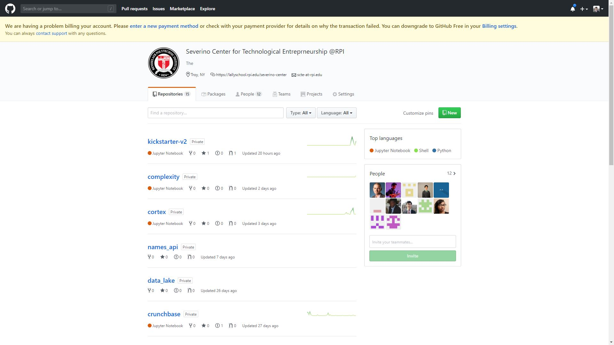

Data Lake & Analytics Undergraduate Research

Role: Researcher & Developer
Team: Computer Science & Business Majors
Timeline: September 2019 - May 2020
Technologies: Python, Jupyter Notebook, Pandas, BeautifulSoup, FuzzyWuzzy
About:
As an undergraduate researcher for the Severino Center for Technological Entrepreneurship,
I collaborated with computer science and business majors to gather and analyze social media
and business related data in an efficient manner. I developed Python scripts and utilized data
science libraries to efficiently extract, parse, and analyze relevant data from large datasets,
and saved them within our database directory. I attended weekly team meetings to address problems,
updates, or solutions, and kept note of tasks to be completed for the following week.
Tasks:
1) Used textpreprocessing techniques and the levenshtein distance algorithm to determine if a given Instagram profile was a business or an influencer.
I utilized Nasdaq's company CSV file to find a relationship between the companies in the Nasdaq file and our scraped Instagram data. Each result
was either labeled as 0 or 1 and is to be used for future machine learning purposes, to make it easier to identify an Instagram business or influencer.
2) Created an algorithm to efficiently download images stored on Crunchbase's server, and uniquely identify each one with a UUID
which was saved in a designated folder on our server. I used Pandas to easily query through a large CSV file to identify image links
which I then used to download these images using the request library.
3) Queried through a large Kickstarter dataset to find founder and company information necessary to discover relationships in
our Crunchbase dataset using the pandas library. This task involved querying through a MongoDB collection and finding the most important
characteristics and features of a business and its founders alike.
4) Connected to MongoDB and extracted twitter specific information from a Crunchbase specific collection. I used string manipulation to extract the
twitter user id from a user's profile URL which I then saved with a UUID (universally unique identifier) used to idenitfy a each specific user
within the crunchbase collection.